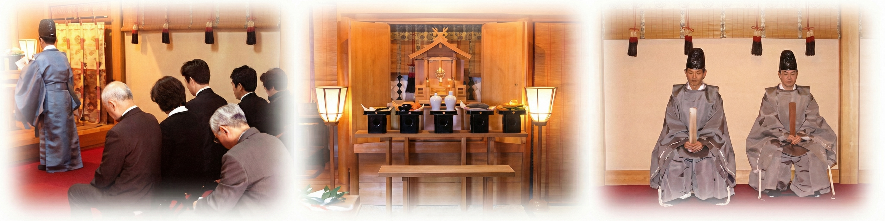
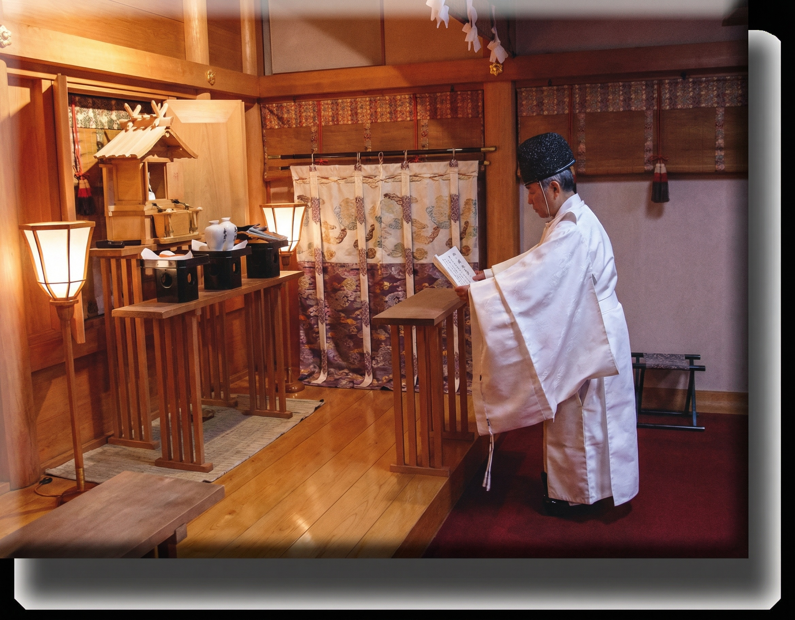
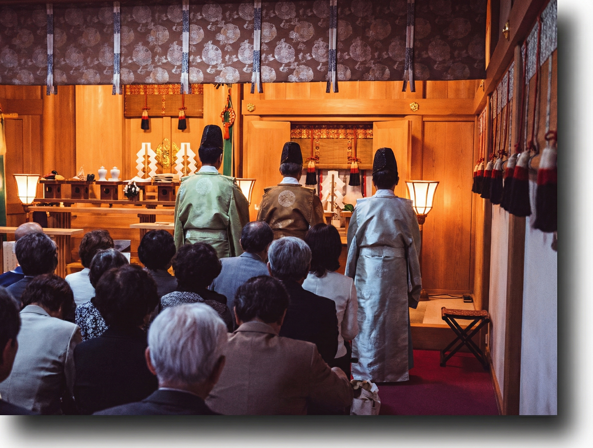
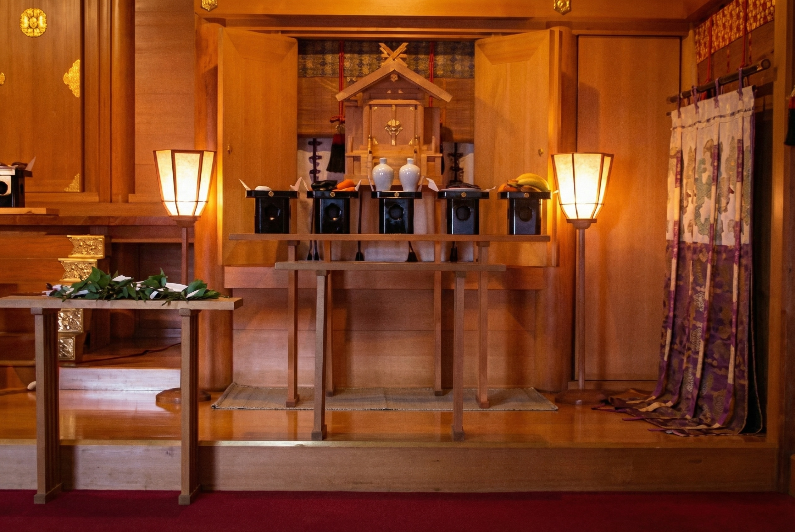

神葬祭
あなたは、この世に何処からきましたか
あなたは、この世を去れば何処にゆきますか

我々が生活し目に見える世界を顕世（うつしよ）と言い、神魂と人の死後の霊魂の世界であり、目に見えない世界を幽世（かくりよ）と言います。
この顕世と幽世との世界は、相即不離の関係にあり「幽顕一如」として現世での諸現象は、見えざる幽世の恩頼によれるものです。
その幽世を主宰されているのが出雲大社御祭神の大国主大神で、人の死後の霊魂を統括しております。
また人は「霊止（ヒト）」として即物的ではなく霊的存在であり、祖先からの霊質を継承し大国主大神のムスヒによりヒトとして生かされております。そしてヒトの死後も霊魂は、幽世に帰り入り幽冥大神と称えられる親神大国主大神の恩頼（みたまのふゆ）をうけ子孫の守護神として追慕をうけて霊魂の安寧を得ております。よってヒトは、大国主大神の御神徳の生死一つながらの「幽顕一如」の道を歩むところにその安心立命があります。
はじめに
● 先祖のおまつり

日本で「お葬式」といえば、仏式で行われる事が多いようです。「ご家庭でのご信仰は？」と尋ねましても、殆どの方が「仏教」と答えるでしょう。
その信仰の主となるものは、それぞれのご先祖様を拝む「先祖供養」が中心となっております。
こうした日本の伝統的な祖先を敬う心は、日本に仏教が入ってくる前からあり、昔ながらの土台があるからこそ、仏壇で祖先のおまつりが行われているのです。
● 幽（ゆう）と顕（けん）
出雲では昔から「人は霊止（ヒト）なり」と言い、出雲弁で妊娠したことを「フ（ヒ−霊）がト（止）マラッシャッタ」と感謝して喜びます。神霊が宿られて新しい生命が誕生した有難さを表すのでした。
他方、『古事記』・『日本書紀』に物語られる神話では、見える世界の顕世（うつしよ）は伊勢神宮の天照大御神が司られ、見えない世界の幽世・幽冥（かくりよ）は、出雲大社の大国主大神が主宰なさると幽契が結ばれました。（幽顕分任の神勅）
これにより大国主大神は幽冥主宰大神（かくりよのおおかみ）として信仰されています。
出雲大社の神葬祭は、『古事記』・『日本書紀』に表された日本古来のこの「いのり」によって仕え継がれ言い継がれたミタママツリです。
－ 幽顕分任の神勅
（ゆうけんぶんにんのしんちょく）－
日本書紀の一書に、高皇産霊尊（たかみむすひのみこと）が大己貴神（おおなむちのかみ＝大国主大神）に以下のように勅（みことのり）されたのが幽顕分任の神勅です。
「それ汝が治す顕露事（あらわにごと）は、よろしく是れ吾が皇孫（すめみま）治すべし、汝は則ち以て神事（かみごと）を治すべし。」
「あなたが治めている現実世界は、皇孫が治めるべきものである。あなたは退いて目に見えない世界を治めなさい。」
この顕露事（あらわにごと）というのは、現象世界の事、つまり目に見える世界の事です。
神事（かみごと）いうのは、目に見えない世界の事で精神や信仰・霊魂の世界といった意味です。
かくして、出雲大社教では、大国主大神は幽冥主宰大神（かくりよのおおかみ）として信仰されており、生きている間も死んでからも大国主大神に見守って頂ける安心を説いています。
出雲大社でおわけしている御神幅（ごしんぷく）では、玉を抱いている大国主大神のお姿が描かれています。この玉は、魂（たましい）の世界を治めていることを象徴しています。
－ 千家尊福公のみおしえの歌 －
「幽冥の神の恵しなかりせば
霊魂（たま）の行方は安くあらめや」
「身のかぎり国にまことをつくさなん
魂（たま）は出雲の神にまかせて」
※ 以下の説明は基本的なもので、地方や神社によって異なりますので詳細は奉仕神社とご相談下さい。
神葬祭 −神道のお葬式−
《神葬祭の流れ》
● 移霊祭（いれいさい）・通夜祭
移霊祭は葬祭の中でも大切な儀式です。帰幽（きゆう）後、「○○命之霊璽」と記した霊璽（れいじ）に遷霊し、続いて、「行く末かけて安らかに鎮まりませ」と安寧を願う霊魂安定詞を奏上します。
霊璽は、仏教でいう「位牌」にあたります。

写真１:霊璽、写真２:蓋を取った状態
● 葬儀・告別式
悲しみのなかにもお姿に再び逢見ることの出来なくなる別れの重大な儀式ですから礼を尽して手厚く行います。
御霊さまが安らかに幽世の神位に鎮まり給うを祈り、ご遺徳を偲んで霊継(ひつぎ)を厳粛に行い、ひたすらに幽冥主宰大神のご加護を願います。
弔問者には日頃の交際と会葬を謝します。
● 帰家祭（きかさい）ならびに
繰上の十日祭（とおかさい）
火葬を終えて家に帰り、帰家祭を行いますが、最近では斎場で執り行うことが多いです。
また、十日祭はみたままつりですが、日にちや時間の関係もあり、葬儀当日に繰上げて行います。
● 神葬祭の心得
不幸がでた時、その日のうちに神棚には白い半紙を張り、この間は拝礼をしてはいけないとされています。そしてこの紙は５０日、清祓の儀後、はずされます。５０日祭は、今日で喪が明けることを知らせる忌明けの祭りです。（１００日祭・１年祭をあてる所もあります）この他、神葬祭では拝礼の作法も普段とは異なり、音を出さずに手を叩く忍手（しのびて）をもちいます。
『復祭』のすすめ
神式のお葬式のことを『神葬祭』と申します。神社といえば宮参りや七五三や結婚式のイメージが強く、お葬式はお寺のイメージが強いかもしれませんが、実は神社でもお葬式を執り行っているのです。
特に出雲大社の御祭神である大国主大神様は様々な御神徳を司りますが『幽冥主宰大神』として死後（生前）の世界、魂の世界をも治めていらっしゃいます。
このことから出雲大社では『神葬祭』を大切にご奉仕しており、ご先祖様を神式でおまつりするお家のことを『斎家（お寺でいう檀家）』と申し上げます。
この『斎家』には、ご要望がございますれば趣旨ご納得のうえで新たにどなたでもなることができます。仏教伝来以前の我が国の本来の『みたままつり』の姿に『復する（あるべき姿に戻る）』という考え方から、新たに斎家になることを『復祭』と申し上げます。
詳細はお電話でも直接でも、出雲大社東京分祠社務所へお訊ねくださいませ。
みたままつり −先祖供養のおまつり−
《みたままつりの流れ》
● 五十日祭
五十日目に行うおまつりで、忌明けの意味も含んでおります。
このお祭りの後からは、しのび手ではなくなります。
また、埋葬祭と一緒に行われることが多いです。
● 埋葬祭（納骨）
遺骨を墓所に納めるおまつりです。
● 年祭：一年祭、二年祭、三年祭、五年祭、十年祭、二十年祭、三十年祭、四十年祭、五十年祭
みたまの遺徳をしのび、節目の年ごとに行うおまつりです。


分祠で行われる年祭の模様
● 霊祭の特徴
仏教の回忌にあたる儀礼では「霊祭」といいます。神葬祭が終わると節目ごとに、御霊の遺徳を偲び、１年祭に始まり、３年・５年・１０年・２０年・３０年・４０年・５０年と続き、以後１００年ごとに行います。これらの年以外にも、毎年の命日の儀礼は仏教同様に行われます。
１年祭までは神葬祭の延長と考えられ、以後、故人の御霊は祖霊として祀られます。１年祭が一つの区切りとされたのは、御霊は帰幽の後、一定の期間は荒々しい状態で、祖霊として御霊が和み（なごみ）《和魂（にぎみたま）》鎮まる期間を、生活の基本単位の１年と定めたことによるものと思われます。
また、おまつりを行うにあたって、例えば年祭を行う場合、ご命日に行う事ができない場合は、繰上げて行います。遅れて行う事はしません。
分祠で行われる年祭の模様
この他に、春季祖霊祭（春分の日）、秋季祖霊祭（秋分の日）、正辰祭（祥月命日）、毎月の１日・１５日に月次祭（つきなみさい）、朝夕に日供を行います。
このように霊祭を続けていくことで、御霊は霊威を増し、神霊へとたかまり、家の守護神として永く子孫を守護するものと考えられています。
拝礼の作法
亡くなられた方のご冥福を祈る気持は神道でも仏教でもかわりはなく、真心よりお祈り下さればお気持は御霊さまにとどきますので形式にはこだわらなくてもよいのです。
ここでは、御参考に出雲大社の拝礼の仕方を記して置きます。
● 玉串拝礼
| イ） | 榊葉に紙垂を付けた玉串を両手で持ち、御霊前に進みます。 |
|---|---|
| ロ） | 先ず、胸高に玉串を上げて一礼します。 |
| ハ） | 玉串の根本を持って心中でご冥福を祈り、その気持を御霊さまに捧げるように根本を御霊前に向けてお供えします。そのときは時計回転に玉串を回します。 |
| ニ） | 次いで二拝します。 |
| ホ） | 次いで音をさせずに四たび手を打ちます。 ※ 一般の神葬祭では二拍手ですが、出雲大社では四拍手です 葬儀から五十日祭までの忌中の期間はしのび手と言い、慎みの心で音を立てずに拝礼します。 |
| ヘ） | 次いで、一拝します。 |
以上、一礼／祈念して、玉串を根本を霊前に向けてお供えする／二拝／四拍手(無音)／一拝が出雲大社の葬儀での拝礼作法です。